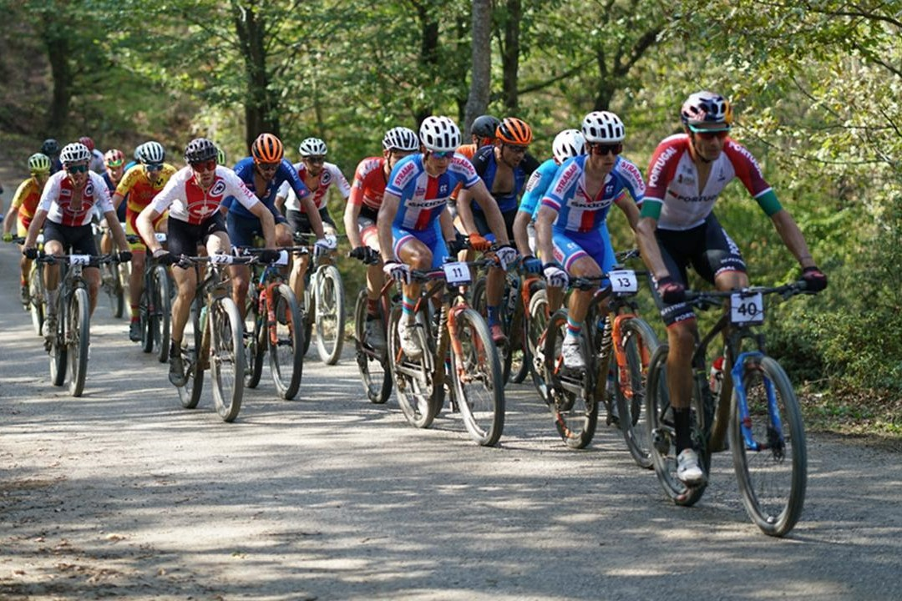

AYÇİÇEĞİ BİSİKLET VADİSİ

Ulusal ve Uluslararası bisiklet şampiyonaları için Dünya standartlarına uygun inşa edilmiştir. 2020 Dağ Bisikleti Dünya Şampiyonası burada gerçekleşmiştir.Ayrıca Sakarya, dünyada 12 şehrin sahip olduğu ‘Bisiklet Dostu Şehir unvanı'nı almaya hak kazanan 13.şehir olmuştur.
Bünyesinde kafeler, oturma alanları, bisiklet yolları ve parkurları bulunmaktadır. Profosyenel parkur, kısa ve uzun olmak üzere asfalt yoldan oluşan iki ayrı parkur ile toplam 3 parkur bulunmaktadır.
Bir çok etkinlik ve konserlere ev sahipliği yapmaktadır. Ulaşımı asfalt yol olup, her mevsim ziyaret edilebilmektedir.